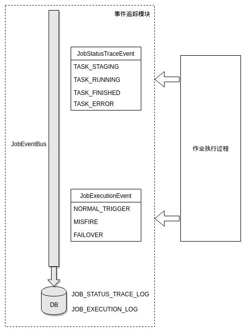

在整个作业执行的过程中，elastic-job对作业的状态、执行情况做了事件追踪，用于查询、统计和监控。事件总线JobEventBus中注册了两种事件，分别是JobStatusTraceEvent和JobExecutionEvent，分别对应作业状态和触发来源。elastic-job会在作业执行过程中向事件总线实时发送事件追踪信息，JobEventBus接收追踪信息后会写入DB。

问题
JobStatusTraceEvent和JobExecutionEvent分别对应mysql中的两张表，可能会带来一些问题：
- 每个作业执行到不同阶段都会将追踪事件写入db，而elastic-job并没有提供定期清理功能，除非手动删除，否则两张表将会慢慢地变得非常庞大。
- 事件追踪表对业务有一定程度的入侵。如果事件追踪表与业务表使用不同的数据源，那么在业务代码里就要为事件追踪单独配置一个数据源；而跟业务使用同一个数据源显然是不合理的。
- elastic-job每接入一个业务工程，都要配置一个数据源，接入麻烦，而且不易于管理。
改造
针对上面的问题，改造思路主要是不要写db，而是写日志文件，将日志文件传输到ELK，进行统一的查询和问题排查。
在elastic-job-lite-2.1.5版本中，做如下修改：
在elastic-job-common中的elastic-job-common-core模块中，在com.dangdang.ddframe.job.event下创建log目录，新建下面三个文件：
|
|
JobEventLogListener监听JobEventBus上的发布事件，当有新的追踪事件发布时，就会打印日志。
那么如何将默认的写db换成写日志呢？
首先在job.xsd中添加一个use-log-for-event-trace标签，默认为false
|
|
然后在BaseJobBeanDefinitionParserTag.java中记录这个标签的key
|
|
AbstractJobBeanDefinitionParser.java负责解析elastic-job的配置文件，生成相应的bean，其中createJobEventConfig方法就是生成事件追踪配置bean的，将此方法修改成下面这样：
|
|
意思就是先检查作业配置，看有没有配置event-trace-rdb-data-source，如果有，就按照原有的写db的方式记录追踪事件，如果没有，再看有没有配置use-log-for-event-trace，然后按照JobEventLogConfiguration初始化事件追踪配置bean